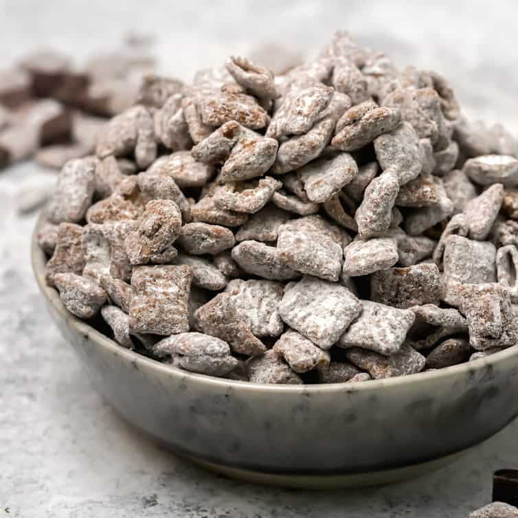

4.1 Muddy Buddies
Hannah Boyd

4.1.1 Pitch
If you love crunchy, chocolatey, peanut buttery goodness you will love this recipe! A great gift if you put it in glass jars and you can add some M&M’s for color – and flavor!
4.1.2 Materials
- 9 cups Rice Chex™, Corn Chex™ or Chocolate Chex™ cereal (or combination)
- 1 cup semisweet chocolate chips
- ½ cup peanut butter
- ¼ cup butter or margarine
- 1 teaspoon vanilla
- 1 ½ cups powdered sugar
4.1.3 Methods
- Into large bowl, measure cereal; set aside.
- In 1-quart microwavable bowl, microwave chocolate chips, peanut butter and butter uncovered on High 1 minute; stir. Microwave about 30 seconds longer or until mixture can be stirred smooth. Stir in vanilla.
- Pour mixture over cereal, stirring until evenly coated. Pour into 2-gallon resealable food-storage plastic bag or toss in a large mixing bowl.
- Add powdered sugar. Seal bag; shake until well coated. Spread on waxed paper to cool. Store in airtight container.